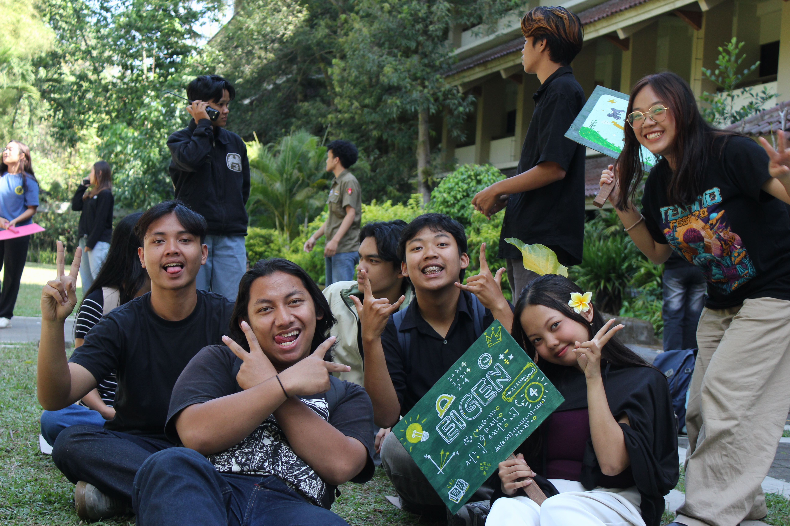

Berikut beberapa dokumentasi :



Selamat datang di CV aku, di sini aku bakal tulis informasi tentang diriku.
Curriculum Vitae
Selasa, 15 September 2026
Data Diri
Nama : Bernadeta Keysa Putri NatalieRiwayat Pendidikan
Pengalaman Organisasi & Kepanitiaan
Berikut beberapa dokumentasi :

| Strength | Weakness |
|---|---|
|
|